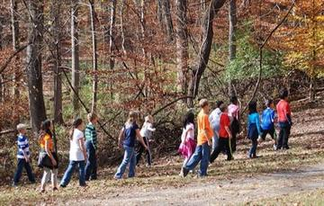
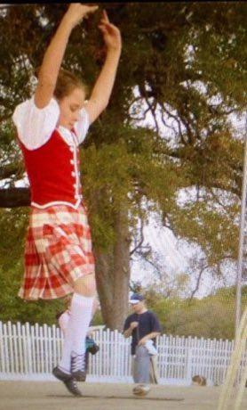

Deep Past and First Games 1
River Valleys and First Cities 1

Windmill Miller
Netherlands +3 · Puzzles and mind games
Classical Worlds 4


Crossroads and Golden Ages 7

Croquet
United Kingdom +2 · Board and table games


Racing Pigeon Loft
Belgium +2 · Board and table gamesPub dominoes
United Kingdom · Board and table games
Age of Contact and Craft 9

Antigua Classic Yacht Race
Antigua and Barbuda +1 · Racing

Change Ringing
United Kingdom · Puzzles and mind games

Regional pub games
United Kingdom · Street and playground games
Modern Heritage 20

Bagatelle
France +1 · Dexterity and skill games
Bat and Trap
United Kingdom · Dexterity and skill games
Bridge Stick Race
United Kingdom · Toys

Clockwork Movement Builder
Germany +2 · Puzzles and mind games

Cynghanedd Poetry Puzzle
United Kingdom · Puzzles and mind games


Netball
Australia +1 · Team ball sports


Living Traditions 13


Celtic knot weave
Ireland +1 · Crafts and makingPlay preview · in the Textile Crafts of the World app
Grandmother's Footsteps
United Kingdom +2 · Other traditions

Nordic Colourwork Knitting
United Kingdom +2 · Crafts and makingPlay preview · in the Textile Crafts of the World app
Paper Fortune Teller
United Kingdom +3 · Crafts and making
Ribbon Pole Weave
United Kingdom +1 · Dances
Ribbon-Pole Plaiting Dance
United Kingdom +4 · DancesPlay preview · in the Music & Dance of the World app
Sprouts
United Kingdom · Crafts and making
Tartan Sett Weaving
United Kingdom +1 · Crafts and makingPlay preview · in the Textile Crafts of the World app